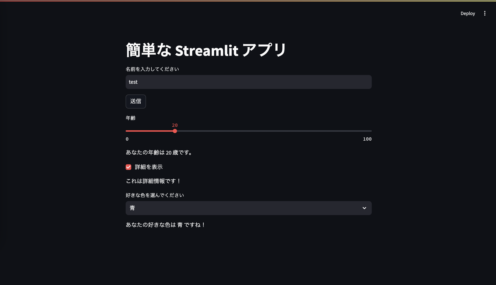
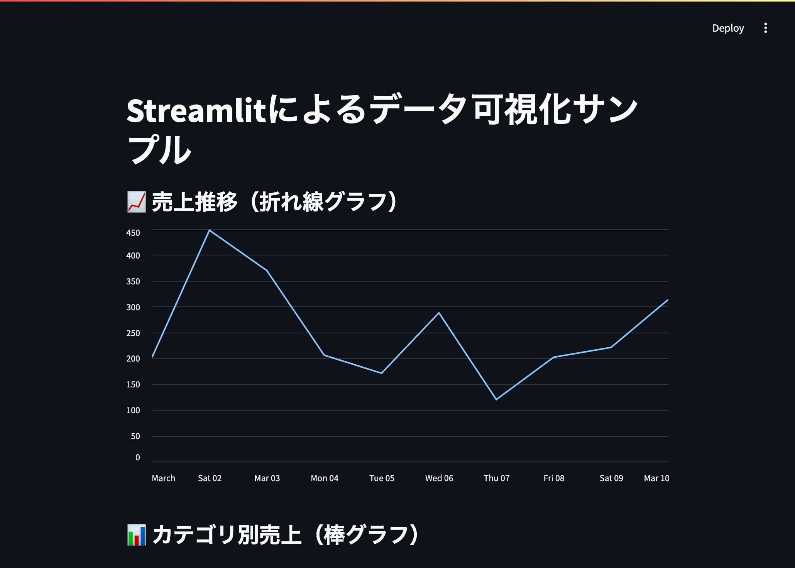
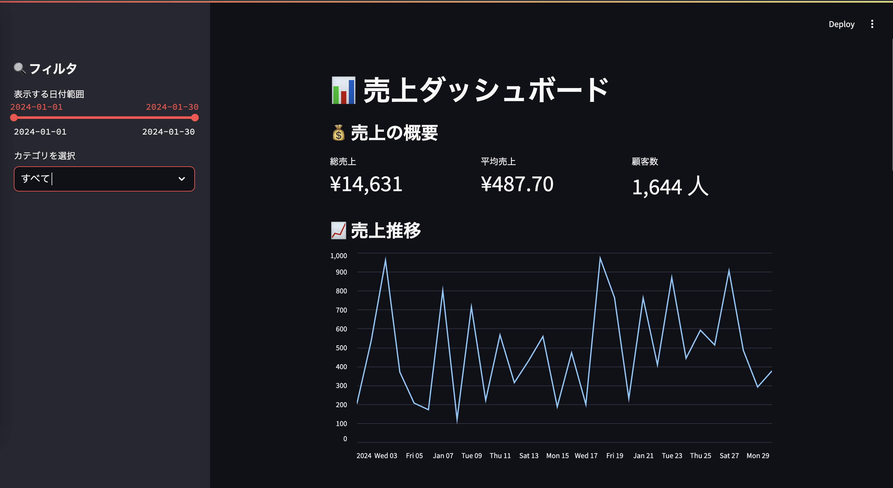

Streamlitは、Pythonのみで実装可能なWebアプリケーションのフレームワークです。 シンプルなコードでインタラクティブなUIを作成でき、データ可視化や機械学習のデモなどに適しています。
まず、Streamlitをインストールします。
pip install streamlit次に、アプリのスクリプトファイルを作成します。
notepad streamlit_app.py以下内容を保存し、メモ帳を閉じる
import streamlit as st
# タイトル
st.title("簡単な Streamlit アプリ")
# テキスト入力
name = st.text_input("名前を入力してください")
# ボタン
if st.button("送信"):
st.write(f"こんにちは、{name} さん！")
# スライダー
age = st.slider("年齢", 0, 100, 25)
st.write(f"あなたの年齢は {age} 歳です。")
# チェックボックス
if st.checkbox("詳細を表示"):
st.write("これは詳細情報です！")
# セレクトボックス
option = st.selectbox("好きな色を選んでください", ["赤", "青", "緑"])
st.write(f"あなたの好きな色は {option} ですね！")st.title("タイトル")：アプリのタイトルを設定します。st.text_input("ラベル")：ユーザーからのテキスト入力を受け取ります。st.button("ボタン名")：ボタンがクリックされたら特定の処理を実行します。st.slider("スライダー名", 最小値, 最大値, 初期値)：数値をスライダーで選択できます。st.checkbox("チェックボックス名")：チェックが入った場合に表示される内容を制御できます。st.selectbox("セレクトボックス名", [選択肢リスト])：ドロップダウンメニューを作成します。作成したアプリを起動するには、次のコマンドを実行します。
streamlit run streamlit_app.py
補足 実行時にEmailの入力を求められることがありますが、空欄のままエンターキーを押せば問題ありません。
アプリが起動すると、ブラウザで以下のURLにアクセスできます。 http://localhost:8501/
アプリを終了するには、ターミナルに戻り、Ctrl + cを押下してください。
PandasやMatplotlibを使い、グラフや表を動的に表示できます。  ### ダッシュボードの作成 業務データをリアルタイムで分析し、視覚的にわかりやすく表示できます。 